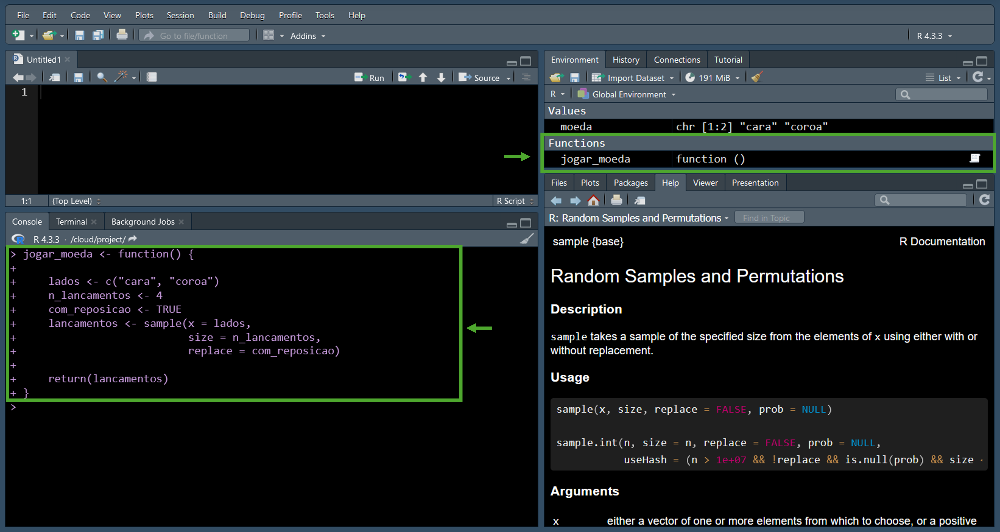

1 + 2 + 3 + 4 + 5 + 6
#> [1] 21Apêndice A — Introdução ao R
Para começar a usar o , você precisará baixar uma cópia do e também do RStudio IDE, um ambiente de desenvolvimento integrado (IDE) gratuito, que simplifica o uso do . Tanto o quanto o RStudio IDE são de código aberto, o que significa que não há custos de licenciamento envolvidos.
Antes de descrever o processo de instalação, é importante entender como o e o RStudio IDE funcionam juntos, e também como estender sua funcionalidade usando pacotes e outros softwares complementares. (Ismay e Kim 2020, cap. 1) fornecem uma excelente explicação pedagógica desses conceitos. Esta seção se baseia na abordagem deles e utiliza as mesmas analogias.
A.1 R e RStudio IDE
O é como o motor de um carro, enquanto o RStudio IDE funciona como o volante e o painel, conforme ilustrado na Figura A.1. Assim como um motorista interage principalmente com o volante e o painel para controlar o carro, raramente precisando interagir diretamente com o motor, o RStudio IDE também oferece uma interface amigável para trabalhar com o poderoso mecanismo do . Essa interface simplifica o processo de usar o para suas tarefas.

A.2 Como baixar e instalar o R
Para obter uma cópia e a versão oficial mais recente do , acesse The Comprehensive R Archive Network (CRAN). O é desenvolvido para as famílias de sistemas operacionais Unix, Windows e Mac. Na CRAN, você encontrará 3 links para baixar o para Linux, macOS ou Windows:
: Clique em Download R for Linux, escolha sua distribuição e siga as instruções de instalação específicas para sua distribuição.
: Clique em Download R for macOS. Selecione o instalador que corresponda à sua versão do macOS, abra-o e siga as instruções na tela.
: Clique em Download R for Windows e, em seguida, clique em base. Depois, clique no primeiro link no topo da nova página e execute o instalador. O instalador irá guiá-lo através do processo de instalação.
A.3 Como baixar e instalar o RStudio IDE
Para obter a versão oficial mais recente do RStudio IDE, acesse https://posit.co/download/rstudio-desktop/. Role a página para baixo, selecione seu sistema operacional e baixe o instalador apropriado. Abra o instalador e siga as instruções fornecidas.
Agora que você instalou o e o RStudio IDE, você está pronto para começar a trabalhar no RStudio IDE. Assim como você interage principalmente com o volante e o painel de um carro em vez do motor, você focará em usar a interface do RStudio IDE para trabalhar com o .
Ao abrir o RStudio IDE, você pode criar um novo script selecionando File > New File > R Script ou usando o atalho de teclado Ctrl + Shift + N. Você verá quatro painéis principais na interface, como mostrado na Figura A.2:
- Painel 1: É onde você escreve, edita e salva seu código R.
- Painel 2: Aqui você pode digitar os comandos do R e ver os resultados.
- Painel 3: Este painel mostra os objetos do R (como variáveis ou dados) que você criou durante a sessão atual.
- Painel 4: Vários elementos de saída, incluindo arquivos, gráficos e documentos de ajuda, são exibidos aqui.

A.3.1 Configurar e personalizar o RStudio IDE
Para personalizar seu espaço de trabalho, acesse Tools > Global Options. Em seguida:
- Sempre inicie o com uma sessão em branco, Figura A.3:
- Use o operador de pipe nativo,
|>, Figura A.4:

- Ajuste o tamanho da fonte e selecione um tema escuro, Figura A.5:

A aplicação dessas mudanças personalizará sua experiência com o RStudio IDE, como mostrado na Figura A.6.

A.4 Executar código usando o RStudio IDE
Para nos comunicarmos com uma máquina, escrevemos instruções em uma linguagem especializada chamada código. Este código é então traduzido em um formato que a máquina entende, permitindo que ela execute as tarefas que definimos.
Vamos começar com um exemplo simples! Digite 1 + 2 + 3 + 4 + 5 + 6, como mostrado na Figura A.7, e então aperte Enter para ver o que acontece!
Se você seguiu as instruções certinho, o RStudio IDE vai mostrar o seguinte resultado:
Ao executar o código, você pode encontrar mensagens , avisos ou erros. Não entre em pânico! Estas são maneiras do seu computador se comunicar com você:
Mensagem (Message): É simplesmente uma nota informativa. Seu código ainda será executado sem problemas.
Aviso (Warning): Alerta você sobre potenciais resultados inesperados, mas seu código ainda será executado.
Erro (Error): Indica um problema fundamental que impede o seu código de ser executado. Você precisará corrigir o problema para que seu código possa funcionar.
Mais adiante, você usará o comando install.packages(), onde poderá encontrar mensagens. Para avisos ou erros, tente os seguintes comandos para ilustrar as diferenças:
log(x = -1)
#> Warning in log(x = -1): NaNs produced
#> [1] NaN"Tudo bem" * 2
#> Error in "Tudo bem" * 2: non-numeric argument to binary operatorNo primeiro caso, o código será executado, mas você verá o resultado NaN (Not a Number, em inglês) porque o logaritmo de um número negativo é indefinido. No segundo caso, seu código não será executado porque o não permite a multiplicação de palavras.
Nota
No , uma string é uma coleção de um ou mais caracteres e são criadas usando aspas duplas, "". Por exemplo, "Tudo bem" é uma string.
A.5 Objetos, funções e o operador de atribuição
Tudo que existe no é um objeto (Chambers 2014, 170). Isso significa que números, textos e até mesmo instruções para o computador são todos tratados como objetos. Você manipula esses objetos usando funções, que recebem objetos como entrada e produzem novos objetos como saída.
Por exemplo, quando você soma os números 1, 2, 3, 4, 5 e 6 (que são objetos), você usa a função + repetidamente para criar um novo objeto 21. O é construído sobre a ideia de que objetos e funções trabalham juntos.
Para trabalhar com objetos de forma simples, você pode atribuir nomes a eles usando o operador <-. Uma vez que um objeto tenha um nome, você pode manipulá-lo chamando esse nome.
Para entender esses conceitos de maneira prática, vamos considerar o processo de jogar uma moeda usando o .
A.5.1 Objeto moeda
Vamos imaginar uma moeda padrão com dois lados: cara e coroa, como mostrado na Figura A.8.

Para simular um lançamento de moeda em , primeiro precisamos criar um objeto que represente nossa moeda com seus dois lados: cara e coroa. Vamos atribuir um nome a esse objeto usando <-. Veja como combinar esses elementos em R usando a função c():
moeda <- c("cara", "coroa")
Nota
Para representar os dois lados da moeda, usamos duas strings: "cara" e "coroa". Usar apenas cara e coroa sem aspas duplas poderia causar problemas, pois o as interpretaria como nomes associados a alguns objetos, em vez de valores representando os dois lados da moeda.
Agora que associamos um nome ao nosso objeto moeda, podemos manipulá-lo simplesmente chamando o nome moeda:
moeda
#> [1] "cara" "coroa"Quando um objeto tem um nome, ele aparecerá na aba Ambiente (Environment, em inglês) do painel 3 no RStudio IDE, como mostrado na Figura A.9.
A.5.2 Jogar uma moeda
Agora que você criou um objeto no , é hora de simular o lançamento de uma moeda. Uma maneira de fazer isso é com a função sample:
sample(x = moeda, size = 1)
#> [1] "coroa"Aqui, o argumento x informa à função qual objeto usar para selecionar os elementos. O argumento size especifica quantos elementos escolher, neste caso size = 1 para representar o lançamento de uma única moeda.
Vamos tentar jogar a moeda duas vezes:
sample(x = moeda, size = 2)
#> [1] "cara" "coroa"E que tal 3 vezes?
sample(x = moeda, size = 3)
#> Error in sample.int(length(x), size, replace, prob): cannot take a sample larger than the population when 'replace = FALSE'Você encontrará um erro. Não se preocupe, os erros são úteis. A mensagem de erro menciona o argumento replace. Para aprender mais sobre qualquer função, use ? seguido do nome da função, como ?sample, conforme mostrado na Figura A.10.
Quando replace = FALSE, cada item em x só pode ser escolhido uma vez. Para simular vários lançamentos de uma moeda, em que cada resultado tem a mesma probabilidade de ser selecionado a cada vez, replace = TRUE:
sample(x = moeda, size = 3, replace = TRUE)
#> [1] "coroa" "coroa" "coroa"Agora temos todos os componentes para construir uma função na próxima seção. Comecemos simulando quatro lançamentos de uma moeda:
lados <- c("cara", "coroa")
n_lancamentos <- 4
com_reposicao <- TRUE
lancamentos <- sample(x = lados,
size = n_lancamentos,
replace = com_reposicao)
lancamentos
#> [1] "coroa" "cara" "cara" "coroa"
Importante
Para melhorar a legibilidade do código, seguiremos estas diretrizes:
Nomes de objetos: Use apenas letras minúsculas sem acentos, números e sublinhados,
_, para nomes de objetos.Separação de palavras: Utilize sublinhados para separar palavras dentro de um nome (isso é conhecido como snake case).
Nomes significativos: Escolha nomes de objetos que reflitam com precisão o que eles representam.
A.5.3 Definindo novas funções
No , uma função tem três partes básicas: um nome, um corpo e um conjunto de argumentos1. Para criar uma, usamos a função function, seguindo esta estrutura:
nome <- function(argumentos) {
corpo
}Vamos construir nossa função de lançamento de uma moeda passo a passo. Por enquanto, começaremos sem usar argumentos:
jogar_moeda <- function() {
lados <- c("cara", "coroa")
n_lancamentos <- 4
com_reposicao <- TRUE
lancamentos <- sample(x = lados,
size = n_lancamentos,
replace = com_reposicao)
return(lancamentos)
}
Dica
Em uma função bem estruturada, usamos a declaração return no final do corpo para especificar explicitamente o valor que queremos que a função retorne. Isso é considerado uma boa prática na programação em .
Copie e cole o código acima no console, pressione Enter e verifique a aba Ambiente (Environment, em inglês) do RStudio IDE, como mostrado na Figura A.11.

Agora vamos ver se a função realmente funciona:
jogar_moeda()
#> [1] "coroa" "coroa" "coroa" "cara"Você pode se perguntar: Por que não usar simplesmente jogar_moeda? Vamos tentar e ver o que acontece:
jogar_moeda
#> function() {
#>
#> lados <- c("cara", "coroa")
#> n_lancamentos <- 4
#> com_reposicao <- TRUE
#> lancamentos <- sample(x = lados,
#> size = n_lancamentos,
#> replace = com_reposicao)
#>
#> return(lancamentos)
#> }Nesse caso, o vai te mostrar o código da função em vez de executá-la como faz quando você digita jogar_moeda().
A.5.4 Argumentos
Para tornar nossa função mais flexível, vamos permitir que o usuário especifique o número de lançamentos de moeda. Podemos fazer isso transformando n_lancamentos em um argumento da função:
jogar_moeda <- function(n_lancamentos) {
lados <- c("cara", "coroa")
com_reposicao <- TRUE
lancamentos <- sample(x = lados,
size = n_lancamentos,
replace = com_reposicao)
return(lancamentos)
}Agora, o usuário pode personalizar o número de lançamentos, especificando um valor maior ou igual a um. Vamos tentar com sete lançamentos:
jogar_moeda(n_lancamentos = 7)
#> [1] "coroa" "cara" "coroa" "coroa" "cara" "coroa" "coroa"Também podemos definir valores padrão para os argumentos de uma função. Esses valores serão usados se o usuário não fornecer um valor, oferecendo flexibilidade e permitindo personalização se necessário. Vamos ilustrar essa opção definindo um valor padrão para o argumento lados:
jogar_moeda <- function(n_lancamentos,
lados = c("cara", "coroa")) {
com_reposicao <- TRUE
lancamentos <- sample(x = lados,
size = n_lancamentos,
replace = com_reposicao)
return(lancamentos)
}Se o usuário estiver satisfeito com as etiquetas “cara” e “coroa” para os lados da moeda, então podemos jogar uma moeda nove vezes da seguinte forma:
jogar_moeda(n_lancamentos = 9)
#> [1] "cara" "coroa" "coroa" "cara" "coroa" "coroa" "coroa" "coroa" "coroa"No entanto, se o usuário quiser alterar o valor do argumento lados, mudando seus valores para refletir os lados da moeda mostrados na Figura A.8, podemos proceder da seguinte maneira:
jogar_moeda(n_lancamentos = 9, lados = c("cabeca", "navio"))
#> [1] "cabeca" "cabeca" "navio" "cabeca" "navio" "navio" "navio" "cabeca"
#> [9] "navio"A Figura A.12, inspirada em (Grolemund e Wickham 2015, chap. 1), ilustra os componentes de uma função usando como exemplo jogar_moeda.
A.6 Projetos no RStudio
A.6.1 Por que usar projetos?
Quando você trabalha com dados (sejam reais ou simulados) ou aprende novos conceitos de estatística usando , manter seus arquivos organizados é fundamental. Os Projetos do RStudio oferecem uma ótima maneira de fazer isso! Veja o que significa organizar seu trabalho em projetos:
Pasta de projeto dedicada: Pense nela como um container especial para cada tópico. Todos os seus arquivos relacionados (anotações, código, dados) ficam nesta pasta.
Nomenclatura clara: Dê aos seus arquivos nomes descritivos para que você possa encontrar facilmente o que precisa depois.
Seu ponto de partida: Esta pasta se torna seu local de referência para qualquer coisa relacionada a esse projeto.
Os projetos do RStudio ajudam a manter seu trabalho organizado e fácil de encontrar. Além disso, você pode mover ou compartilhar facilmente um projeto inteiro, já que tudo fica junto.
Vamos começar criando um projeto chamado estatistica_descritiva onde organizaremos nosso trabalho sobre a função jogar_moeda.
A.6.2 Como criar um projeto no RStudio
Projetos no RStudio podem ser criados de três formas diferentes:
- Em um novo diretório
- Em um diretório existente.
- Clonando um repositório de controle de versão.
Vamos focar na criação de um projeto totalmente novo, então você não precisa se preocupar com as outras opções.
Para criar um novo projeto de RStudio:
- Selecione File > New Project
- Escolha a opção New Directory (Veja Figura A.13)
- Selecione New Project, escolha onde salvar o seu projeto e nomeie-o como estatistica_descritiva (Veja Figura A.14)
Se você seguir esses passos, uma pasta chamada estatistica_descritiva será criada com um arquivo estatistica_descritiva.Rproj dentro dela. Para manter tudo organizado, crie uma nova pasta chamada 000_scripts dentro da pasta do projeto. A estrutura do seu projeto agora deve se parecer com a Figura A.15.
A.6.3 Trabalhando com projetos
Se fechar o RStudio IDE, para abrir o projeto e começar a trabalhar nele, é sempre necessário seguir os passos abaixo:
- Abra a pasta estatistica_descritiva
- Clique duas vezes no arquivo estatistica_descritiva.Rproj
Sempre siga estes passos para começar a trabalhar em seu projeto!
A.7 Scripts
Escrever código diretamente no console é bom para testes rápidos, mas não permite salvar seu trabalho facilmente. Scripts são essenciais porque eles:
- Preservam o progresso: Salve seu código para usá-lo novamente mais tarde sem ter que reescrever tudo.
- Documentam o processo: Adicione anotações e explicações para ajudar você (e outros!) a entender seu código no futuro.
Vamos começar criando um script para a nossa função jogar_moeda:
- Selecione File > New File > R Script.
- Copie e cole o código da função
jogar_moedaneste script. - Salve o arquivo na sua pasta 000_scripts e nomeie-o como jogar_moeda.R.
A estrutura do seu projeto agora deve se parecer com algo assim:
📦estadistica_descritiva
|-📂000_scripts
| |-📜jogar_moeda.R
|-📜estadistica_descritiva.RprojAlém disso, e o RStudio IDE tornam fácil adicionar comentários aos seus scripts das seguintes maneiras:
- Comentários: Comece uma linha com
#e adicione seu comentário. - Seções de código: Use quatro traços seguidos,
----, para criar uma seção.
Vamos documentar seu script jogar_moeda.R apontando o propósito e o valor de saída da função jogar_moeda:
# Função jogar_moeda ----
# Propósito ----
# Simular uma série de lançamentos de uma moeda
# Saída ----
# Um vetor contendo os resultados de cada
# lançamento de uma moeda
jogar_moeda <- function(n_lancamentos,
lados = c("cara", "coroa")) {
com_reposicao <- TRUE
lancamentos <- sample(x = lados,
size = n_lancamentos,
replace = com_reposicao)
return(lancamentos)
}Agora, seu script está bem documentado e fácil de entender. Este processo é mostrado na Figura A.16 usando o RStudio IDE.
A.8 Pacotes
Funções possuem complexidades adicionais, mas vamos manter a explicação simples por enquanto. Se você ficar curioso mais tarde, confira (Wickham 2019, chap. 6) quando tiver mais experiência com o .↩︎